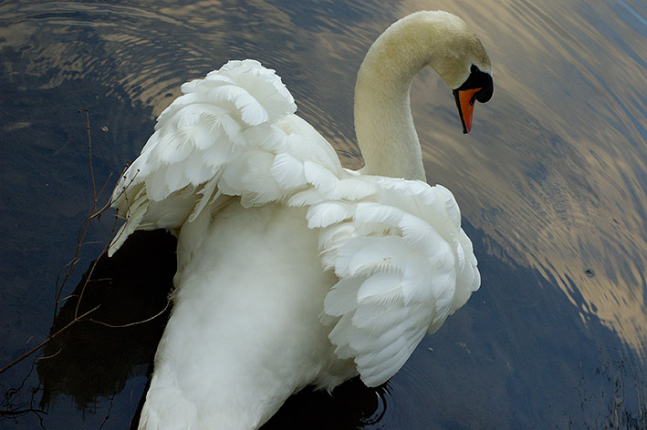
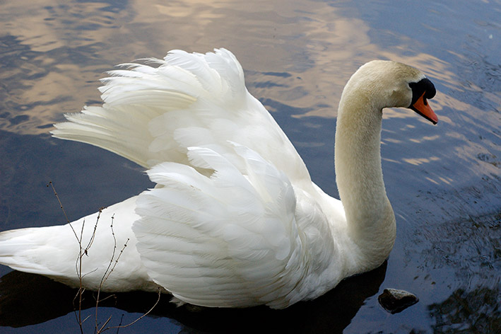
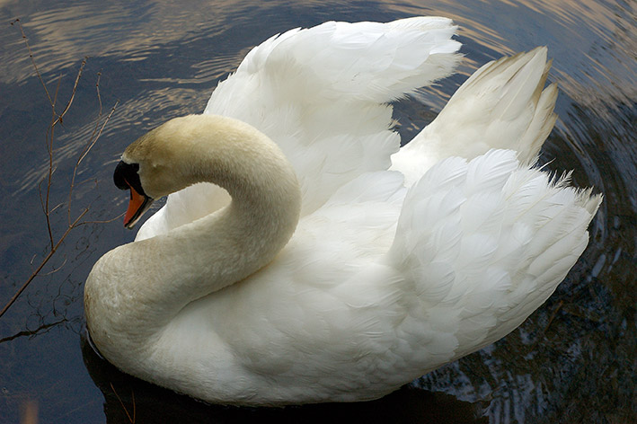
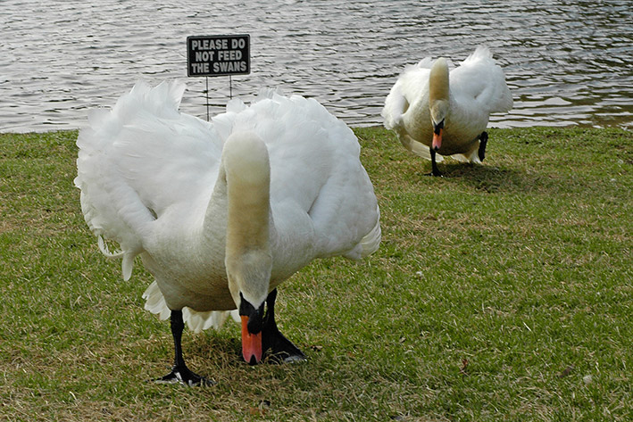

While teaching my ASP.NET class in Little Rock, AR I had an opportunity to make the acquaintance of a swan named Chase. He was one mean swan! He was named Chase by the locals because that was his favorite activity: chasing people away from "his" pond.
The first two shots shown below were shot from a bridge at the far end of the pond. I decided to go to the bridge because I figured that it would be hard for him the "get me" if I was standing on the bridge looking down at him. Sure enough, as I walked around the pond he followed me. You could see him pick up the pace as he saw me approach his pond.
Once I got to the bridge, he took up position under the bridge to make sure that I couldn't get away. This gave me all the time in the world to shoot some photos of him. To get the exposure I wanted, I metered off the swan using my spot meter. I applied +1EV to the meter reading and shot. When I checked my exposure using the histogram, it looked like I nailed it, so I shot the rest of my pictures of him using that setting. Here are my favorite shots of him:



These were all shot as NEF shots, and I applied a further +0.3EV correction when I imported the images into Photoshop CS. The only adjustments that I had to make in Photoshop was a bit of unsharp mask since the images were already tack-sharp out of the camera.
This final shot happened when I walked back around to the other side of the pond. I crouched on the grass and Chase (and Lily - his girlfriend) decided to come out of the water to kick my ass. This picture was the last one in a sequence that I shot using the JPG burst mode in my camera. He was about 3 feet away when I decided to turn and run :)

I didn't get a chance to spot meter in this case, so I shot using the matrix metering mode of the camera. I had to do a lot more post processing to get this shot the way I wanted: some shadows and highlights in PS, some levels adjustment, and some unsharp mask. I'm not sure whether it is better to shoot using the AF-S (single shot autofocus) vs. the AF-C (continuous autofocus) mode during a burst sequence. I have to admit that I didn't know how to turn on AF-C when I shot that photo :)
Posted by John at March 28, 2004 09:47 AM | TrackBackFunny story! I enjoyed looking at the photos. Pin sharp alright!!! Brilliant. I'm waiting for the D70 to come down a few dollars here in NZ before purchasing mine (I'm only a hobbyist and have low budget!), but am madly keen on viewing photos taken with them. They are definitely good cameras by th elook of these!!!
Thanks
Gary
New Zealand
Great pictures. I love the last one. Funny as hell.
Posted by: SlimFlem at April 26, 2004 02:29 PM